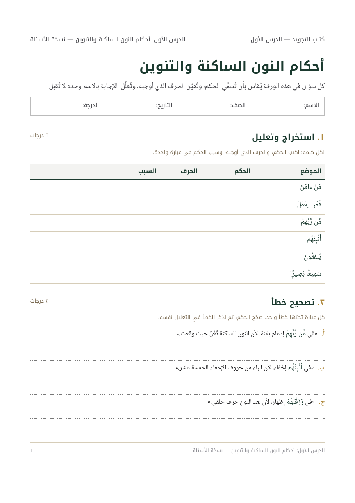
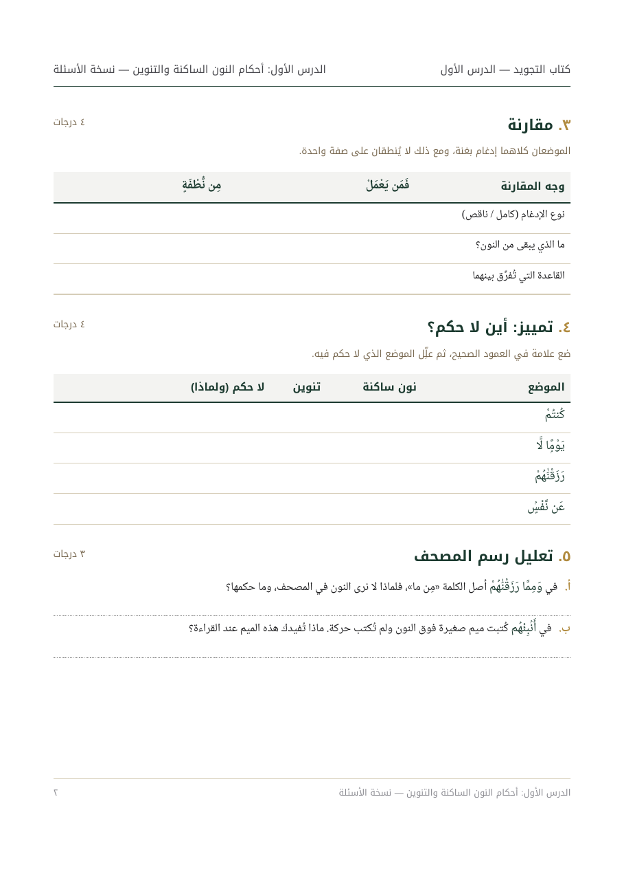
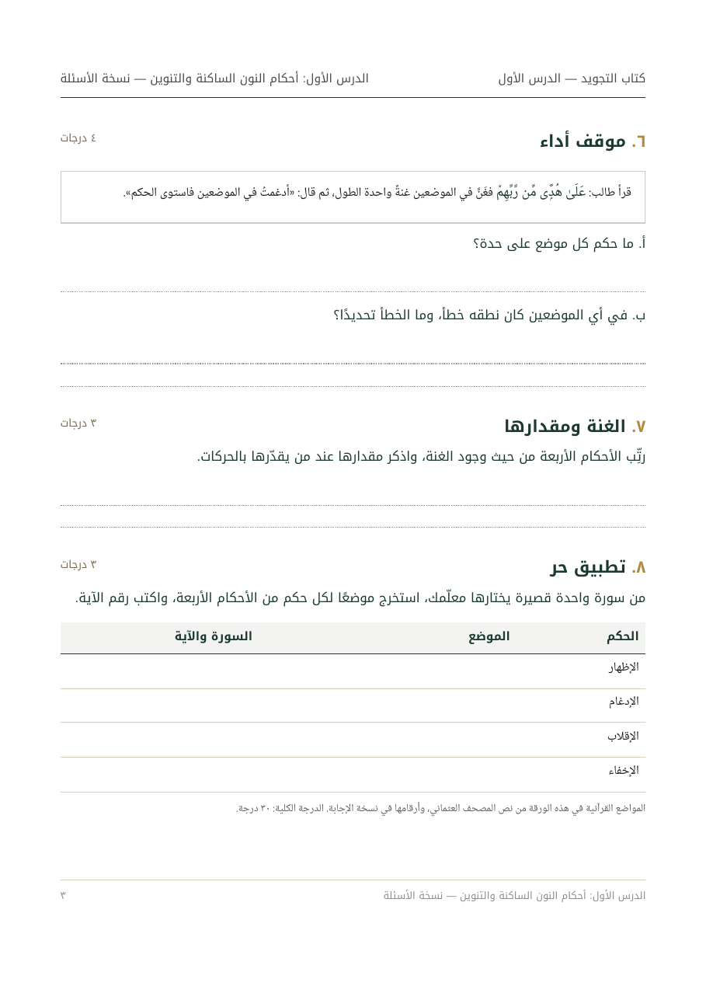
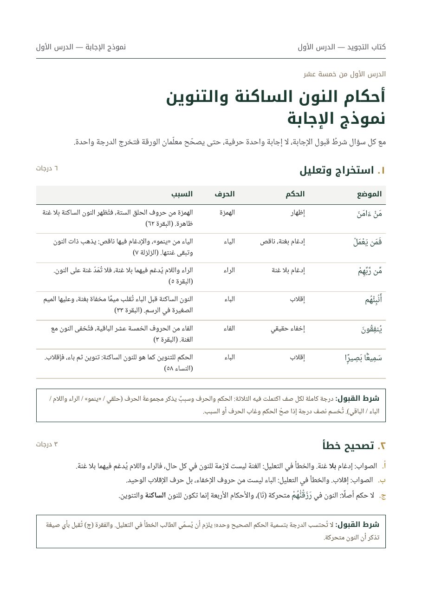
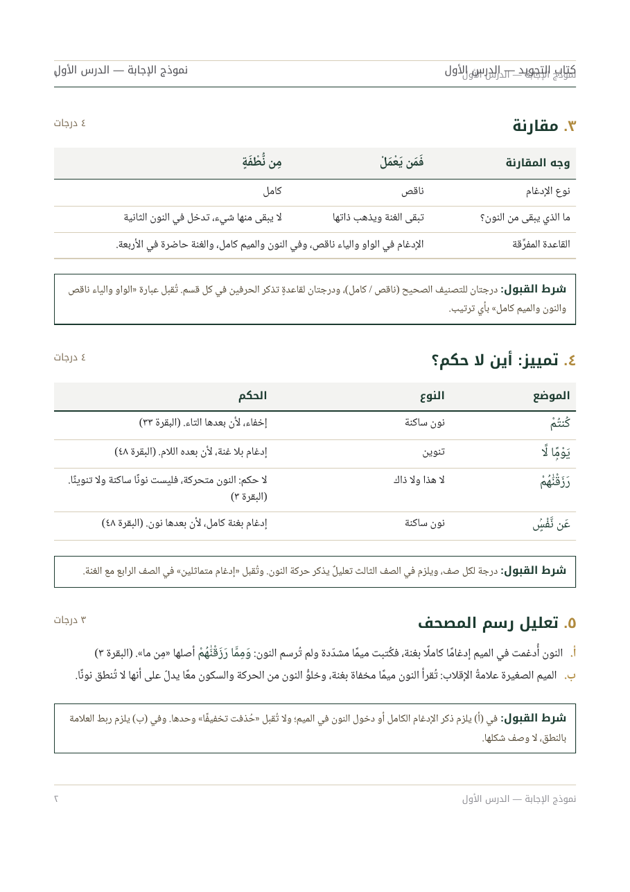
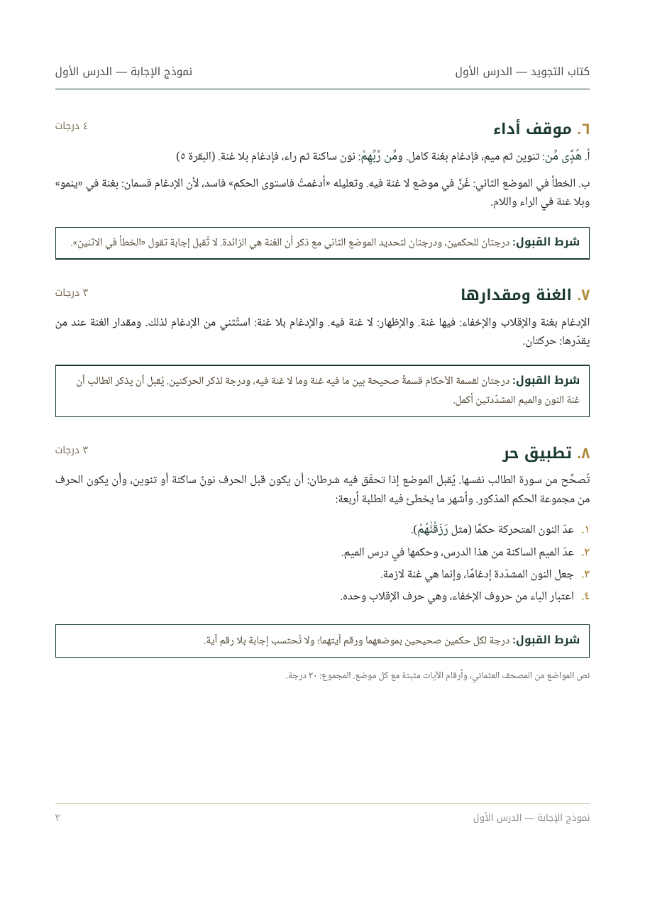

نسخة الأسئلة



نموذج الإجابة



ما الذي يثبته هذا النموذج
| الادعاء | الدليل داخل الملفات |
|---|---|
| أسئلة تقيس التطبيق لا الحفظ | ثمانية أنواع في درس واحد: استخراج وتعليل، تصحيح خطأ، مقارنة، تمييز «أين لا حكم»، تعليل رسم المصحف، موقف أداء، ترتيب، وتطبيق حر. |
| دقة علمية في المواضع القرآنية | كل موضع في الورقتين يُقابَل آليًا عند كل بناء بنص المصحف العثماني المحفوظ في ملف المشروع؛ أي موضع لا يوجد في النص يوقف البناء قبل أن يصل إليك. |
| تصحيح موحَّد | مع كل سؤال «شرط القبول»: ما الذي يُحتسب وما الذي لا يُحتسب، فتخرج الدرجة واحدة مع اختلاف المصحِّح. |
| جاهزية الطباعة | A4، خلفية بيضاء، بلا حشو لوني، هوامش ٢٠/١٨ مم، ومساحات كتابة مقاسة. الصفحات تُرقَّم وتُوزَّع تلقائيًا بحيث لا يُقطع سؤال بين صفحتين. |
| ملفان لا ملف واحد | المصدر واحد، ومنه تُنتَج نسخة PDF للطباعة ونسخة Word قابلة للتعديل تحمل النص نفسه. |
ما يحتاجه العمل منك
- نسخة من الكتاب (أو الدروس الخمسة عشر) بأي صيغة، ليُبنى كل سؤال على محتوى درسه هو.
- المرحلة الدراسية وعدد الحصص، ليُضبط مستوى الأسئلة وعدد الدرجات.
- رواية الأمثلة المعتمدة عندك (حفص عن عاصم افتراضًا)، ومصحفك المعتمد إن كان للكتاب مصحف بعينه.
- مراجعة أهل الاختصاص عندك للورقة الأولى قبل أن تُستكمل البقية، فهذه مادة شرعية تُراجَع ولا يُكتفى فيها بمراجعة المنفّذ.